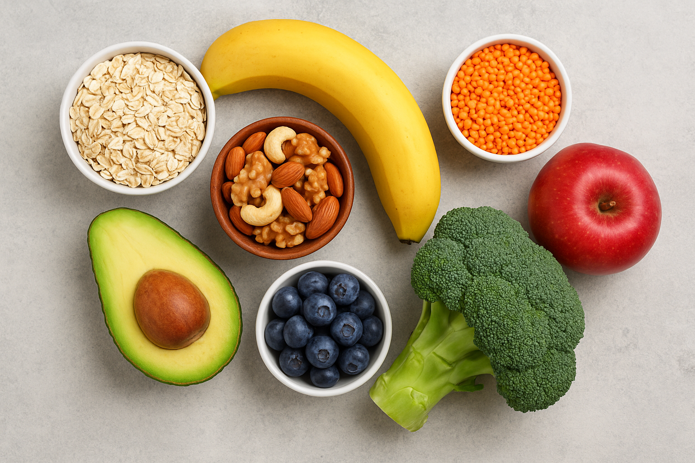

A culinária saudável vai muito além de receitas equilibradas: ela representa um estilo de vida que busca unir sabor, nutrição e bem-estar. Ao escolher alimentos naturais, frescos e variados, é possível criar pratos que nutrem o corpo e, ao mesmo tempo, proporcionam prazer ao paladar. Frutas, verduras, legumes, grãos integrais e proteínas magras são a base dessa alimentação, ajudando na prevenção de doenças e no fortalecimento da saúde.
Outro ponto importante da culinária saudável é a forma de preparo: métodos como cozinhar no vapor, assar ou grelhar preservam melhor os nutrientes e reduzem o uso excessivo de óleos e gorduras. Além disso, temperos naturais, como ervas e especiarias, oferecem aromas e sabores únicos sem a necessidade de exagerar no sal ou em produtos industrializados.
Adotar a culinária saudável é também um ato de cuidado consigo mesmo e com o futuro, já que pequenos ajustes no dia a dia fazem grande diferença na disposição, na energia e na qualidade de vida. É, em essência, transformar a mesa em um espaço de equilíbrio, prazer e saúde.

Vamos para a primeira receita que é: Bolo de Chocolate com Casca de Banana!
Ingredientes:
2 bananas maduras (use a polpa)
Casca de 2 bananas bem lavadas
3 ovos
1/2 xícara de óleo de coco ou outro óleo vegetal
1/2 xícara de mel ou açúcar mascavo (pode usar demerara também)
1 xícara de farinha de aveia (ou farinha integral)
1/2 xícara de cacau em pó 100%
1 colher (sopa) de fermento em pó
1/2 xícara de água ou leite vegetal (se precisar ajustar a massa)
Pitada de canela (opcional)
Modo de Preparo:
Lave bem as cascas de banana, corte em pedaços e bata no liquidificador junto com as bananas, os ovos, o óleo e o mel/açúcar até formar um creme homogêneo.
Em uma tigela, misture os secos: farinha, cacau e canela.
Despeje o creme do liquidificador sobre os ingredientes secos e mexa até incorporar. Se a massa ficar muito pesada, acrescente um pouco de água ou leite vegetal.
Por último, adicione o fermento e misture delicadamente.
Coloque em uma forma untada e leve ao forno pré-aquecido a 180 °C por aproximadamente 35–40 minutos, ou até o palito sair limpo.
Dica:
Você pode finalizar com uma calda simples feita com cacau, mel e um pouquinho de leite vegetal, ou apenas polvilhar cacau em pó por cima.